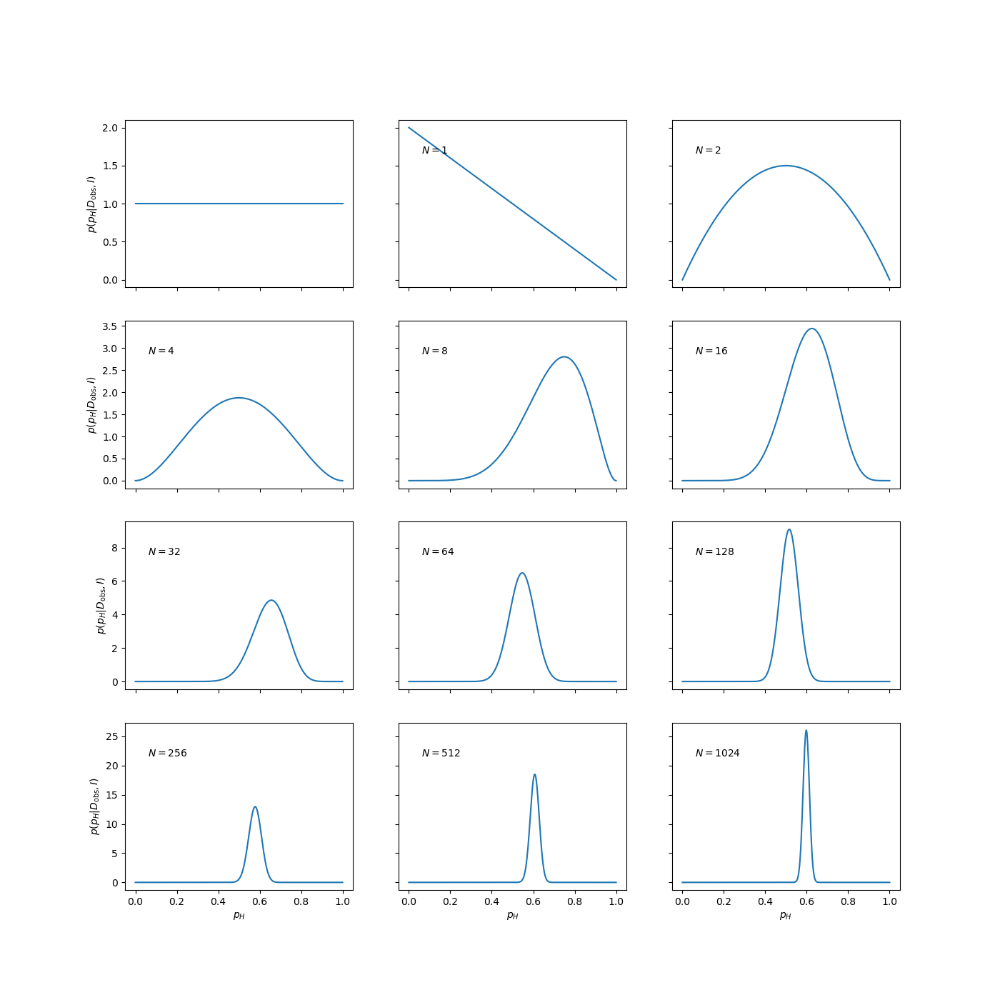

Learning from data: Basics of Bayesian Statistics
Sep 12, 2019
How do you feel about statistics?
Disraeli (attr.):
“There are three kinds of lies: lies, damned lies, and statistics.”
Rutherford:
“If your result needs a statistician then you should design a better experiment.”
Laplace:
“La théorie des probabilités n'est que le bon sens réduit au calcul”
Bayesian Methods: rules of statistical inference are an application of the laws of probability
Inference
- Deductive inference. Cause \( \to \) Effect.
- Inference to best explanation. Effect \( \to \) Cause.
- Scientists need a way to:
- Quantify the strength of inductive inferences;
- Update that quantification as they acquire new data.
Some history
Adapted from D.S. Sivia :1: Sivia, Devinderjit, and John Skilling. Data Analysis : A Bayesian Tutorial, OUP Oxford, 2006
Although the frequency definition appears to be more objective, its range of validity is also far more limited. For example, Laplace used (his) probability theory to estimate the mass of Saturn, given orbital data that were available to him from various astronomical observatories. In essence, he computed the posterior pdf for the mass M , given the data and all the relevant background information I (such as a knowledge of the laws of classical mechanics): prob(M|{data},I); this is shown schematically in the figure [Fig. 1.2].

To Laplace, the (shaded) area under the posterior pdf curve between \( m_1 \) and \( m_2 \) was a measure of how much he believed that the mass of Saturn lay in the range \( m_1 \le M \le m_2 \). As such, the position of the maximum of the posterior pdf represents a best estimate of the mass; its width, or spread, about this optimal value gives an indication of the uncertainty in the estimate. Laplace stated that: ‘ . . . it is a bet of 11,000 to 1 that the error of this result is not 1/100th of its value.’ He would have won the bet, as another 150 years’ accumulation of data has changed the estimate by only 0.63%!
According to the frequency definition, however, we are not permitted to use probability theory to tackle this problem. This is because the mass of Saturn is a constant and not a random variable; therefore, it has no frequency distribution and so probability theory cannot be used.If the pdf [of Fig. 1.2] had to be interpreted in terms of the frequency definition, we would have to imagine a large ensemble of universes in which everything remains constant apart from the mass of Saturn.
As this scenario appears quite far-fetched, we might be inclined to think of [Fig. 1.2] in terms of the distribution of the measurements of the mass in many repetitions of the experiment. Although we are at liberty to think about a problem in any way that facilitates its solution, or our understanding of it, having to seek a frequency interpretation for every data analysis problem seems rather perverse. For example, what do we mean by the ‘measurement of the mass’ when the data consist of orbital periods? Besides, why should we have to think about many repetitions of an experiment that never happened? What we really want to do is to make the best inference of the mass given the (few) data that we actually have; this is precisely the Bayes and Laplace view of probability.
Faced with the realization that the frequency definition of probability theory did not permit most real-life scientific problems to be addressed, a new subject was invented — statistics! To estimate the mass of Saturn, for example, one has to relate the mass to the data through some function called the statistic; since the data are subject to ‘random’ noise, the statistic becomes the random variable to which the rules of probability the- ory can be applied. But now the question arises: How should we choose the statistic? The frequentist approach does not yield a natural way of doing this and has, therefore, led to the development of several alternative schools of orthodox or conventional statis- tics. The masters, such as Fisher, Neyman and Pearson, provided a variety of different principles, which has merely resulted in a plethora of tests and procedures without any clear underlying rationale. This lack of unifying principles is, perhaps, at the heart of the shortcomings of the cook-book approach to statistics that students are often taught even today.
Probability density functions (pdf:s)
- \( p(A|B) \) reads “probability of \( A \) given \( B \)”
- Simplest examples are discrete, but physicists often interested in continuous case, e.g., parameter estimation.
- When integrated, continuous pdfs become probabilities \( \Rightarrow \) pdfs are NOT dimensionless, even though probabilities are.
- 68%, 95%, etc. intervals can then be computed by integration
- Certainty about a parameter corresponds to \( p(x) = \delta(x-x_0) \)
Properties of PDFs
There are two properties that all PDFs must satisfy. The first one is positivity (assuming that the PDF is normalized) $$ \begin{equation*} 0 \leq p(x). \end{equation*} $$ Naturally, it would be nonsensical for any of the values of the domain to occur with a probability less than \( 0 \). Also, the PDF must be normalized. That is, all the probabilities must add up to unity. The probability of "anything" to happen is always unity. For discrete and continuous PDFs, respectively, this condition is $$ \begin{align*} \sum_{x_i\in\mathbb D} p(x_i) & = 1,\\ \int_{x\in\mathbb D} p(x)\,dx & = 1. \end{align*} $$
Important distributions, the uniform distribution
Let us consider some important, univariate distributions. The first one is the most basic PDF; namely the uniform distribution $$ \begin{equation} p(x) = \frac{1}{b-a}\theta(x-a)\theta(b-x). \label{eq:unifromPDF} \end{equation} $$ For \( a=0 \) and \( b=1 \) we have $$ p(x) = \left\{ \begin{array}{ll} 1 & x \in [0,1],\\ 0 & \mathrm{otherwise} \end{array} \right. $$
Gaussian distribution
The second one is the univariate Gaussian Distribution $$ \begin{equation*} p(x) = \frac{1}{\sigma\sqrt{2\pi}} \exp{(-\frac{(x-\mu)^2}{2\sigma^2})}, \end{equation*} $$ with mean value \( \mu \) and standard deviation \( \sigma \). If \( \mu=0 \) and \( \sigma=1 \), it is normally called the standard normal distribution $$ \begin{equation*} p(x) = \frac{1}{\sqrt{2\pi}} \exp{(-\frac{x^2}{2})}, \end{equation*} $$
Expectation values
Let \( h(x) \) be an arbitrary continuous function on the domain of the stochastic variable \( X \) whose PDF is \( p(x) \). We define the expectation value of \( h \) with respect to \( p \) as follows $$ \begin{equation} \langle h \rangle_X \equiv \int\! h(x)p(x)\,dx \label{eq:expectation_value_of_h_wrt_p} \end{equation} $$ Whenever the PDF is known implicitly, like in this case, we will drop the index \( X \) for clarity. A particularly useful class of special expectation values are the moments. The \( n \)-th moment of the PDF \( p \) is defined as follows $$ \begin{equation*} \langle x^n \rangle \equiv \int\! x^n p(x)\,dx \end{equation*} $$
Stochastic variables and the main concepts, mean values
The zero-th moment \( \langle 1\rangle \) is just the normalization condition of \( p \). The first moment, \( \langle x\rangle \), is called the mean of \( p \) and often denoted by the letter \( \mu \) $$ \begin{equation*} \langle x\rangle \equiv \mu = \int x p(x)dx, \end{equation*} $$ for a continuous distribution and $$ \begin{equation*} \langle x\rangle \equiv \mu = \sum_{i=1}^N x_i p(x_i), \end{equation*} $$ for a discrete distribution. Qualitatively it represents the centroid or the average value of the PDF and is therefore simply called the expectation value of \( p(x) \).
Mean, median, average
The values of the mode, mean, median can all be used as point estimates for the "probable" value of \( x \). For some pdfs, they will all be the same.
Figure 1: The 68%/95% probability regions are shown in dark/light shading. When applied to Bayesian posteriors, these are known as credible intervals or DoBs (degree of belief intervals) or Bayesian confidence intervals. The horizontal extent on the \( x \)-axis translates into the vertical extent of the error bar or error band for \( x \).

Stochastic variables and the main concepts, central moments, the variance
A special version of the moments is the set of central moments, the n-th central moment defined as $$ \begin{equation*} \langle (x-\langle x\rangle )^n\rangle \equiv \int\! (x-\langle x\rangle)^n p(x)\,dx \end{equation*} $$ The zero-th and first central moments are both trivial, equal \( 1 \) and \( 0 \), respectively. But the second central moment, known as the variance of \( p \), is of particular interest. For the stochastic variable \( X \), the variance is denoted as \( \sigma^2_X \) or \( \mathrm{Var}(X) \) $$ \begin{align*} \sigma^2_X &=\mathrm{Var}(X) = \langle (x-\langle x\rangle)^2\rangle = \int (x-\langle x\rangle)^2 p(x)dx\\ & = \int\left(x^2 - 2 x \langle x\rangle^{2} +\langle x\rangle^2\right)p(x)dx\\ & = \langle x^2\rangle - 2 \langle x\rangle\langle x\rangle + \langle x\rangle^2\\ & = \langle x^2 \rangle - \langle x\rangle^2 \end{align*} $$ The square root of the variance, \( \sigma =\sqrt{\langle (x-\langle x\rangle)^2\rangle} \) is called the standard deviation of \( p \). It is the RMS (root-mean-square) value of the deviation of the PDF from its mean value, interpreted qualitatively as the "spread" of \( p \) around its mean.
Probability Distribution Functions
The following table collects properties of probability distribution functions. In our notation we reserve the label \( p(x) \) for the probability of a certain event, while \( P(x) \) is the cumulative probability.
| Discrete PDF | Continuous PDF | |
| Domain | \( \left\{x_1, x_2, x_3, \dots, x_N\right\} \) | \( [a,b] \) |
| Probability | \( p(x_i) \) | \( p(x)dx \) |
| Cumulative | \( P_i=\sum_{l=1}^ip(x_l) \) | \( P(x)=\int_a^xp(t)dt \) |
| Positivity | \( 0 \le p(x_i) \le 1 \) | \( p(x) \ge 0 \) |
| Positivity | \( 0 \le P_i \le 1 \) | \( 0 \le P(x) \le 1 \) |
| Monotonic | \( P_i \ge P_j \) if \( x_i \ge x_j \) | \( P(x_i) \ge P(x_j) \) if \( x_i \ge x_j \) |
| Normalization | \( P_N=1 \) | \( P(b)=1 \) |
Quick introduction to scipy.stats
If you google scipy.stats, you'll likely get the manual page as the first hit: https://docs.scipy.org/doc/scipy/reference/stats.html. Here you'll find a long list of the continuous and discrete distributions that are available, followed (scroll way down) by many different methods (functions) to extract properties of a distribution (called Summary Statistics) and do many other statistical tasks.
Follow the link for any of the distributions (your choice!) to find its mathematical definition, some examples of how to use it, and a list of methods. Some methods of interest to us here:
-
mean()- Mean of the distribution. -
median()- Median of the distribution. -
pdf(x)- Value of the probability density function at x. -
rvs(size=numpts)- generate numpts random values of the pdf. -
interval(alpha)- Endpoints of the range that contains alpha percent of the distribution.
The Bayesian recipe
Assess hypotheses by calculating their probabilities \( p(H_i | \ldots) \) conditional on known and/or presumed information using the rules of probability theory.
Probability Theory Axioms:
- Product (AND) rule :
-
\( p(A, B | I) = p(A|I) p(B|A, I) = p(B|I)p(A|B,I) \)
Should read \( p(A,B|I) \) as the probability for propositions \( A \) AND \( B \) being true given that \( I \) is true. - Sum (OR) rule:
-
\( p(A + B | I) = p(A | I) + p(B | I) - p(A, B | I) \)
\( p(A+B|I) \) is the probability that proposition \( A \) OR \( B \) is true given that \( I \) is true. - Normalization:
-
\( p(A|I) + p(\bar{A}|I) = 1 \)
\( \bar{A} \) denotes the proposition that \( A \) is false.
Bayes' theorem
Bayes' theorem follows directly from the product rule $$ p(A|B,I) = \frac{p(B|A,I) p(A|I)}{p(B|I)}. $$
The importance of this property to data analysis becomes apparent if we replace \( A \) and \( B \) by hypothesis(\( H \)) and data(\( D \)): $$ \begin{align} p(H|D,I) &= \frac{p(D|H,I) p(H|I)}{p(D|I)}. \label{eq:bayes} \end{align} $$ The power of Bayes’ theorem lies in the fact that it relates the quantity of interest, the probability that the hypothesis is true given the data, to the term we have a better chance of being able to assign, the probability that we would have observed the measured data if the hypothesis was true.
The various terms in Bayes’ theorem have formal names.
- The quantity on the far right, \( p(H|I) \), is called the prior probability; it represents our state of knowledge (or ignorance) about the truth of the hypothesis before we have analysed the current data.
- This is modified by the experimental measurements through \( p(D|H,I) \), the likelihood function,
- The denominator \( p(D|I) \) is called the evidence. It does not depend on the hypothesis and can be regarded as a normalization constant.
- Together, these yield the posterior probability, \( p(H|D, I ) \), representing our state of knowledge about the truth of the hypothesis in the light of the data.
The friends of Bayes' theorem
- Normalization:
- \( \sum_i p(H_i|I) = 1 \).
- Marginalization:
- \( p(A|I) = \sum_i p(H_i|A,I) p(A|I) = \sum_i p(A,H_i|I) \).
- Normalization (continuum limit):
- \( \int dx p(x|I) = 1 \).
- Marginalization (continuum limit):
- \( p(y|I) = \int dx p(x,y|I) \).
Marginalization is a very powerful device in data analysis because it enables us to deal with nuisance parameters; that is, quantities which necessarily enter the analysis but are of no intrinsic interest. The unwanted background signal present in many experimental measurements are examples of nuisance parameters.
Example: Is this a fair coin?
Let us begin with the analysis of data from a simple coin-tossing experiment. Given that we had observed 6 heads in 8 flips, would you think it was a fair coin? By fair, we mean that we would be prepared to lay an even 1 : 1 bet on the outcome of a flip being a head or a tail. If we decide that the coin was fair, the question which follows naturally is how sure are we that this was so; if it was not fair, how unfair do we think it was? Furthermore, if we were to continue collecting data for this particular coin, observing the outcomes of additional flips, how would we update our belief on the fairness of the coin?A sensible way of formulating this problem is to consider a large number of hypotheses about the range in which the bias-weighting of the coin might lie. If we denote the bias-weighting by \( p_H \), then \( p_H = 0 \) and \( p_H = 1 \) can represent a coin which produces a tail or a head on every flip, respectively. There is a continuum of possibilities for the value of \( p_H \) between these limits, with \( p_H = 0.5 \) indicating a fair coin. Our state of knowledge about the fairness, or the degree of unfairness, of the coin is then completely summarized by specifying how much we believe these various propositions to be true.
Let us perform a computer simulation of a coin-tossing experiment. This provides the data that we will be analysing.
import numpy as np
import matplotlib.pyplot as plt
np.random.seed(999) # for reproducibility
pH=0.6 # biased coin
flips=np.random.rand(2**12) # simulates 4096 coin flips
heads=flips<pH # boolean array, heads[i]=True if flip i is heads
In the light of this data, our inference about the fairness of this coin is summarized by the conditional pdf: \( p(p_H|D,I) \). This is, of course, shorthand for the limiting case of a continuum of propositions for the value of \( p_H \); that is to say, the probability that \( p_H \) lies in an infinitesimally narrow range is given by \( p(p_H|D,I) dp_H \).
To estimate this posterior pdf, we need to use Bayes’ theorem \eqref{eq:bayes}. We will ignore the denominator \( p(D|I) \) as it does not involve bias-weighting explicitly, and it will therefore not affect the shape of the desired pdf. At the end we can evaluate the missing constant subsequently from the normalization condition $$ \begin{equation} \int_0^1 p(p_H|D,I) dp_H = 1. \label{eq:coin_posterior_norm} \end{equation} $$
The prior pdf, \( p(p_H|I) \), represents what we know about the coin given only the information \( I \) that we are dealing with a ‘strange coin’. We could keep a very open mind about the nature of the coin; a simple probability assignment which reflects this is a uniform, or flat, prior $$ \begin{equation} p(p_H|I) = \left\{ \begin{array}{ll} 1 & 0 \le p_H \le 1, \\ 0 & \mathrm{otherwise}. \end{array} \right. \label{eq:coin_prior_uniform} \end{equation} $$ We will get back later to the choice of prior and its effect on the analysis.
This prior state of knowledge, or ignorance, is modified by the data through the likelihood function \( p(D|p_H,I) \). It is a measure of the chance that we would have obtained the data that we actually observed, if the value of the bias-weighting was given (as known). If, in the conditioning information \( I \), we assume that the flips of the coin were independent events, so that the outcome of one did not influence that of another, then the probability of obtaining the data `H heads in N tosses' is given by the binomial distribution (we leave a formal definition of this to a statistics textbook) $$ \begin{equation} p(D|p_H,I) \propto p_H^H (1-p_H)^{N-H}. \label{_auto1} \end{equation} $$
It seems reasonable because \( p_H \) is the chance of obtaining a head on any flip, and there were \( H \) of them, and \( 1-p_H \) is the corresponding probability for a tail, of which there were \( N-H \). We note that this binomial distribution also contains a normalization factor, but we will ignore it since it does not depend explicitly on \( p_H \), the quantity of interest. It will be absorbed by the normalization condition \eqref{eq:coin_posterior_norm}.
We perform the setup of this Bayesian framework on the computer.
def prior(pH):
p=np.zeros_like(pH)
p[(0<=pH)&(pH<=1)]=1 # allowed range: 0<=pH<=1
return p # uniform prior
def likelihood(pH,data):
N = len(data)
no_of_heads = sum(data)
no_of_tails = N - no_of_heads
return pH**no_of_heads * (1-pH)**no_of_tails
def posterior(pH,data):
p=prior(pH)*likelihood(pH,data)
norm=np.trapz(p,pH)
return p/norm
The next step is to confront this setup with the simulated data. To get a feel for the result, it is instructive to see how the posterior pdf evolves as we obtain more and more data pertaining to the coin. The results of such an analyses is shown in Fig. 2.
pH=np.linspace(0,1,1000)
fig, axs = plt.subplots(nrows=4,ncols=3,sharex=True,sharey='row',figsize=(14,14))
axs_vec=np.reshape(axs,-1)
axs_vec[0].plot(pH,prior(pH))
for ndouble in range(11):
ax=axs_vec[1+ndouble]
ax.plot(pH,posterior(pH,heads[:2**ndouble]))
ax.text(0.1, 0.8, '$N={0}$'.format(2**ndouble), transform=ax.transAxes)
for row in range(4): axs[row,0].set_ylabel('$p(p_H|D_\mathrm{obs},I)$')
for col in range(3): axs[-1,col].set_xlabel('$p_H$')
Figure 2: The evolution of the posterior pdf for the bias-weighting of a coin, as the number of data available increases. The figure on the top left-hand corner of each panel shows the number of data included in the analysis.

The panel in the top left-hand corner shows the posterior pdf for \( p_H \) given no data, i.e., it is the same as the prior pdf of Eq. \eqref{eq:coin_prior_uniform}. It indicates that we have no more reason to believe that the coin is fair than we have to think that it is double-headed, double-tailed, or of any other intermediate bias-weighting.
The first flip is obviously tails. At this point we have no evidence that the coin has a side with heads, as indicated by the pdf going to zero as \( p_H \to 1 \). The second flip is obviously heads and we have now excluded both extreme options \( p_H=0 \) (double-tailed) and \( p_H=1 \) (double-headed). We can note that the posterior at this point has the simple form \( p(p_H|D,I) = p_H(1-p_H) \) for \( 0 \le p_H \le 1 \).
The remainder of Fig. 2 shows how the posterior pdf evolves as the number of data analysed becomes larger and larger. We see that the position of the maximum moves around, but that the amount by which it does so decreases with the increasing number of observations. The width of the posterior pdf also becomes narrower with more data, indicating that we are becoming increasingly confident in our estimate of the bias-weighting. For the coin in this example, the best estimate of \( p_H \) eventually converges to 0.6, which, of course, was the value chosen to simulate the flips.
Take aways: Coin tossing
- The Bayesian posterior \( p(p_H | D, I) \) is proportional to the product of the prior and the likelihood (which is given by a binomial distribution in this case).
- We can do this analysis sequentially (updating the prior after each toss and then adding new data; but don't use the same data more than once!). Or we can analyze all data at once.
- Why (and when) are these two approaches equivalent, and why should we not use the same data more than once?
- Possible point estimates for the value of \( p_H \) could be the maximum (mode), mean, or median of this posterior pdf.
- Bayesian p% degree-of-belief (DoB) intervals correspond to ranges in which we would give a p% odds of finding the true value for \( p_H \) based on the data and the information that we have.
- The frequentist point estimate is \( p_H^* = \frac{H}{N} \). It actually corresponds to one of the point estimates from the Bayesian analysis for a specific prior? Which point estimate and which prior?